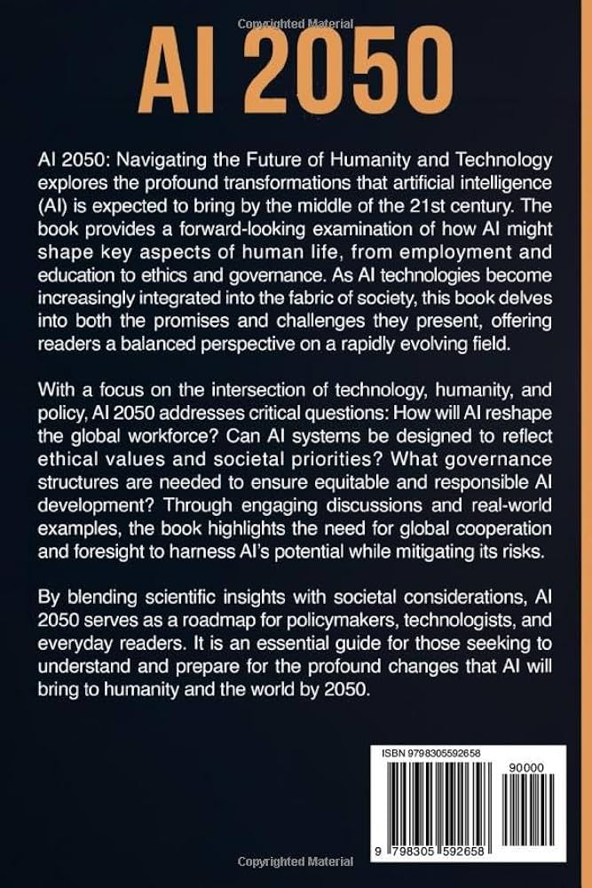
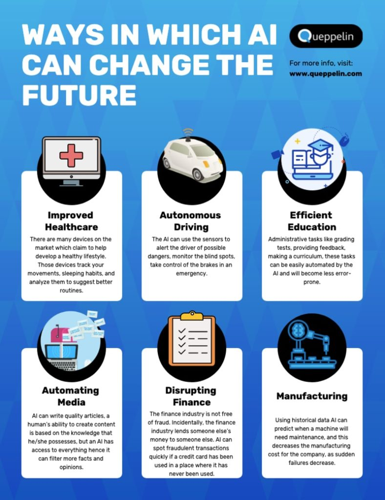

Helpful
solving macro-level crises like climate change
Unhelpful
By Making Every Job Auto Which Will Lose population

By 2050,Ai can help people by being projected to become the primary engine driving global infrastructure, macroeconomics, and human lifespan extension
Mathematician Alan Turing published "Computer Machinery and Intelligence," introducing the Turing Test to evaluate machine intelligence.
By 2050, Artificial Intelligence will have evolved from a tool into an invisible, ubiquitous infrastructure
AI is integrated to function much like electricity did in 1950—essential, invisible, and operating in the background of everyday life
Ai can make eliminating medical errors, predicting terminal illnesses years in advance, and automating physical care for an aging global population which can make people survive more
AI assists people by automating repetitive chores, accelerating complex data analysis, and sparking creativityAI assists people by automating repetitive chores, accelerating complex data analysis, and sparking creativity

